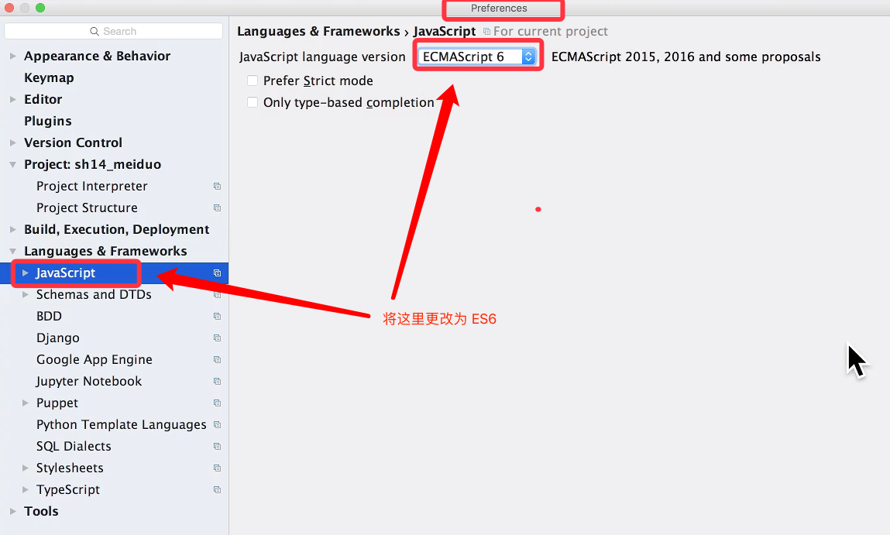
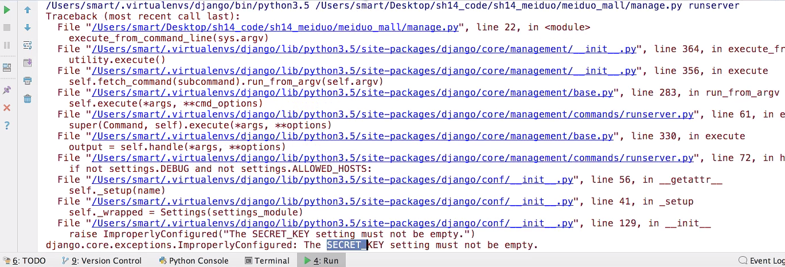

创建工程
本节包含两部分:
- 创建静态文件部分
- 创建 Django 项目部分
1. 在git平台创建工程
本项目使用git管理项目代码，代码库放在gitee码云平台。
(注意，公司中通常放在gitlab私有服务器中）
1） 创建私有项目库


2）克隆项目到本地


3）创建并切换分支到dev
# 创建并切换分支到dev
git checkout -b dev
2. 添加前端文件
在meiduo目录中创建前端文件子目录front_end_pc
将前端静态附件复制到front_end_pc目录下
git提交
# 添加到本地暂存区
git add front_end_pc
# 查看状态
git status
# 提交到本地仓库
git commit -m 'add front end files'
推送到远端
# 推送到远端:
git push origin dev:dev
前端文件开发预览
可以使用前端node.js 提供的服务器live-server作为前端开发服务器使用。
安装node.js的版本控制工具nvm，在终端中执行
curl -o- https://raw.githubusercontent.com/creationix/nvm/v0.33.11/install.sh | bash
重新进入终端，使用nvm安装最新版本的node.js
nvm install node

安装live-server
# 只需安装一次即可
npm install -g live-server

使用
# 在静态文件目录front_end_pc下执行
live-server
live-server运行在8080端口下，可以通过127.0.0.1:8080来访问静态页面。
创建 Django 项目
1. 创建项目步骤:
生成虚拟环境:
mkvirtualenv meiduo安装 Django :
pip install django==1.11.11创建 Django 项目:
django-admin startproject meiduo_mallpycharm 打开, 运行环境, 配置 python 解释器.(之前讲过, 这里不再提)
配置 ES6 环境. 因为我们导入的前端代码是使用 ES6 语法添加. 我们这里需要把 JS 版本改为 ES6 才可:

2. 调整项目结构
工程目录调整如下：

项目的核心代码都放到了内层的 meiduo_mall 里面
外层新增如下文件夹:
- docs: 用于存放一些说明文档资料
- logs: 用于开发阶段输出的日志
- scripts: 用于存放管理脚本文件
内层的 meiduo_mall 内部新增的包:
- apps : 存放 Django 的子应用
- libs: 存放我们使用的第三方的包
- settings 存放当前项目的配置文件，分为开发配置: dev 和上线配置: prod
- utils: 存放自己定义的公共函数或类等
3. 配置 manage.py
我们把项目中的 settings.py 配置文件移入 settings 包中.
并且改名为: dev.py
另外创建一个 prod.py 用于上线时的配置.
运行 manage.py 文件
python manage.py
出错之后调整 pycharm ,给 manage.py 增加参数: runserver
最终运行:
python manage.py runserver
但是运行之后发现还是报错:

这是因为我们把 settings.py 的位置给移动了. 所以出错:
修改 manage.py 中，之前添加的配置:
- 原来:
os.environ.setdefault("DJANGO_SETTINGS_MODULE", "meiduo_mall.settings")
- 修改为:
# TODO 1.1将原来的 settings 路径 改为: settings.dev 文件路径.
os.environ.setdefault("DJANGO_SETTINGS_MODULE", "meiduo_mall.settings.dev")
4. 创建子应用
我们现在创建子应用需要添加到内层的 meiduo_mall 里面的 apps 中:
但是我们现在在 apps 的路径下, 这个路径下没有 manage.py 这个文件
如果我们现在调用 :
# 这个命令会报错, 因为当前路径下找不到 manage.py python manage.py startapp users会报错.
故, 我们需要这样写才可以:
python ../../manage.py startapp users能正常创建子应用.
上面虽然没问题了, 但是如果我们注册子应用的时候, 还是会报错:

这主要是因为:
INSTALLED_APPS = [
'django.contrib.admin',
'django.contrib.auth',
'django.contrib.contenttypes',
'django.contrib.sessions',
'django.contrib.messages',
'django.contrib.staticfiles',
# TODO 1.2还像以前的写法是错误的,这里的 users 会报错, 找不到
'users.apps.UsersConfig'
]
我们在注册的时候, 添加的 users.apps.UsersConfig 找不到
我们需要在原来的项目上再增加一级目录: apps
# TODO 1.3 在 dev.py 文件中, 添加如下代码,
# 在 sys.path 这个列表中的第0号位置, 增加上apps这一级路径即可
import sys
sys.path.insert(0, os.path.join(BASE_DIR, 'apps'))
INSTALLED_APPS = [
'django.contrib.admin',
'django.contrib.auth',
'django.contrib.contenttypes',
'django.contrib.sessions',
'django.contrib.messages',
'django.contrib.staticfiles',
# 上面的引入能够解决报错问题:
'users.apps.UsersConfig'
]
5. 数据库配置
按照我们之前所学,在当前应用中, 配置数据库:
安装 PyMySQL:
pip install PyMySQL在内层 meiduo_mall 的 init.py 文件中进行配置:
# TODO 1.4 替换掉 django 中默认的数据库引擎, 使用 pymysql 替换 from pymysql import install_as_MySQLdb install_as_MySQLdb()配置数据库信息:
# TODO 1.5 配置数据库中的信息: DATABASES = { 'default': { 'ENGINE': 'django.db.backends.mysql', 'HOST': '127.0.0.1', # 数据库主机 'PORT': 3306, # 数据库端口 'USER': 'meihao', # 数据库用户名, 这里使用的不是root用户 'PASSWORD': 'meihao123', # 数据库用户密码 'NAME': 'meiduo01' # 数据库名字 } }我们可以看到上面的信息中, 登录的用户不是 root 用户, 所以我们需要额外创建用户,
也需要额外创建数据库 meiduo01
create database meiduo01 default charset=utf8;然后继续在数据库中添加:
为本项目创建数据库用户（不再使用root账户）
创建额外用户:
create user meihao identified by 'meihao123';用户名: meihao 密码: meihao123
给当前用户授权
grant all on meiduo01.* to 'meihao'@'%';给当前用户授权: 当前用户可以对哪些数据库进行操作:
all: 所有权限(增删改查)
meiduo01.* 对于这个数据库中的所有表
'meihao'@'%' 给meihao这个用户的所有访问ip都授权. % 代表所有访问ip
刷新生效用户权限
flush privileges;刷新生效用户权限
> 说明：
>
> - 第一句：创建用户账号 meihao, 密码 meihao123 (由identified by 指明)
> - 第二句：授权 meiduo01 数据库下的所有表（meiduo01.*）的所有权限（all）给用户meihao在以任何ip访问数据库的时候（'meihao'@'%'）
> - 第三句：刷新生效用户权限
补充:
数据库删除用户:
DROP USER 'username'@'host';